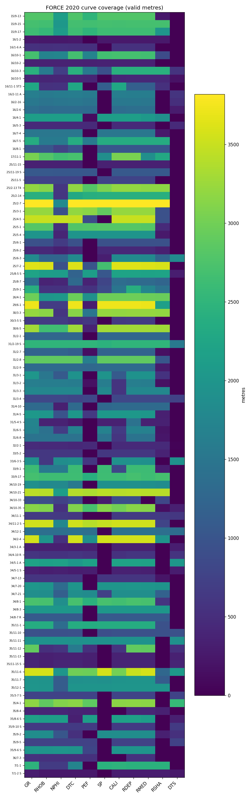
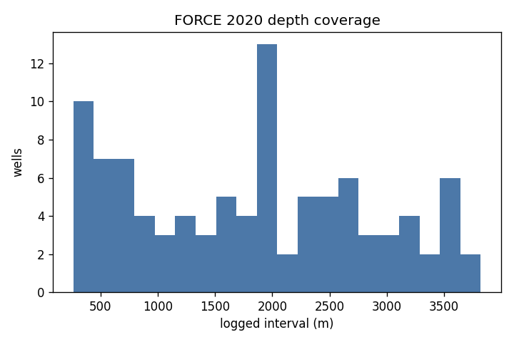
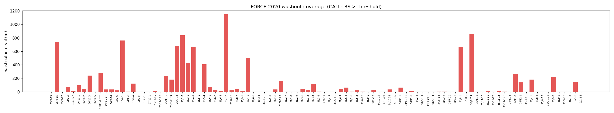

Wells processed: 98 (FORCE training split only). Passed minimum-interval: 98/98. Wells with washout flagging: 59. Wells with no bit size (washout skipped): 29.



Per-well records: reports/force2020_qc_records.csv